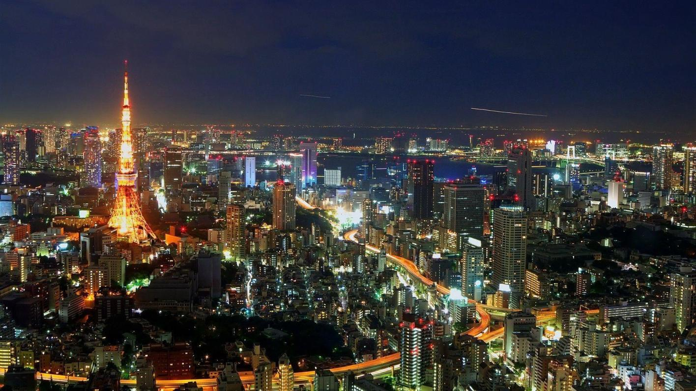
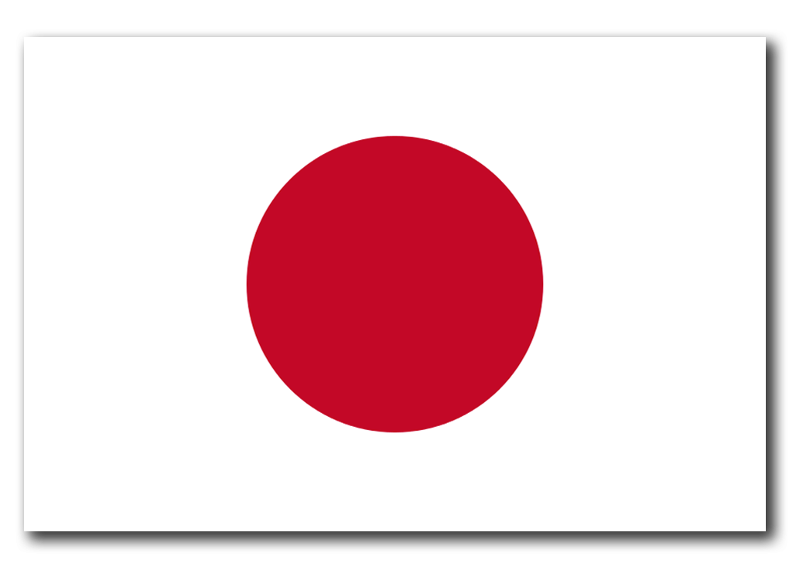
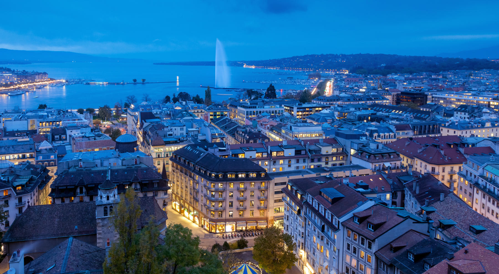
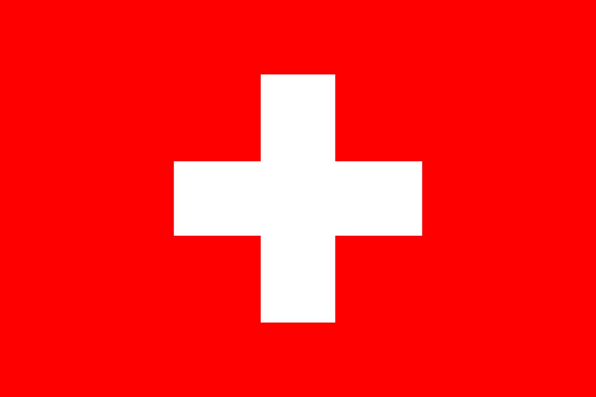
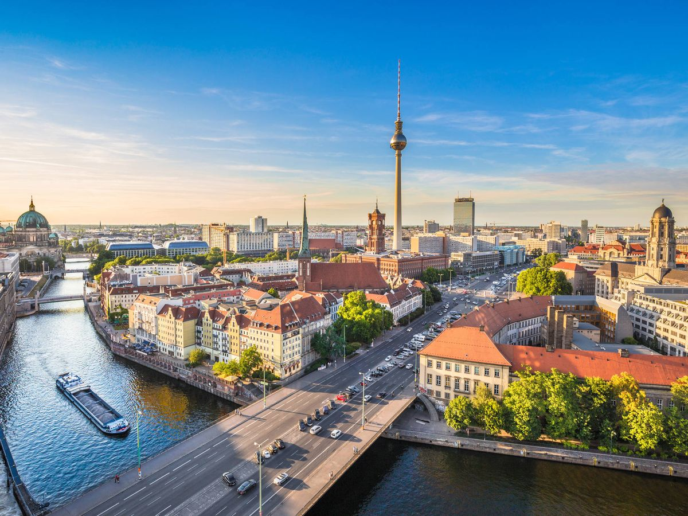
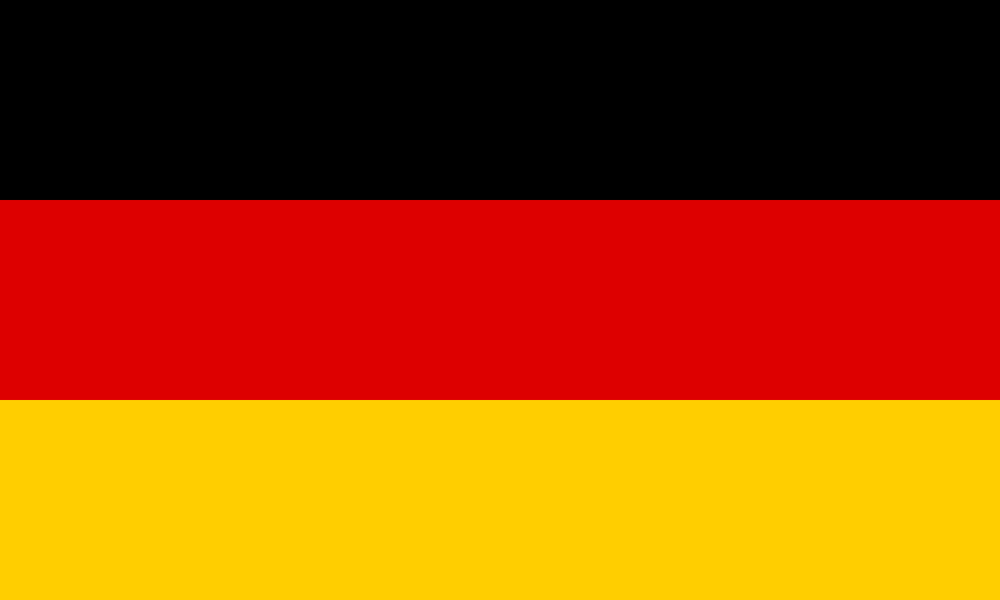

Top 5 Favorite Destinations
Tokyo
- 
- Tokyo is the capital of Japan and is located in the Kanto region on the main island of Honshu.
- Tokyo has a population of 13.96 million (2021).
- The latitude and longitude of Tokyo are 35°41'22.2'' N 139°41.503' E.
- Nestled amidst the vibrant energy of Japan's capital, Tokyo beckons with a tapestry of wonders waiting to be explored. From the towering skyline of Shinjuku to the tranquil gardens of the Imperial Palace, Tokyo seamlessly marries tradition and modernity. Lose yourself in the bustling Tsukiji Fish Market's captivating chaos, then find serenity under the delicate cherry blossoms at Ueno Park. Discover the artistry of ancient temples and the latest in technological marvels, all while savoring the exquisite flavors of authentic sushi and matcha. Tokyo, a symphony of sights, flavors, and cultures, promises an unforgettable journey into the heart of Japan's allure.
Geneva
- 
- Geneva is a city located in Switzerland, a country situated in Central Europe.
- Geneva has a population of 201,818.
- The latitude and longitude of Geneva are 46°12'8'' N 6°8.741' E
- Nestled on the shores of Lake Geneva, this enchanting Swiss city invites you into a world of timeless elegance and natural splendor. From the iconic Jet d'Eau fountain gracefully spraying amidst the shimmering waters to the charming Old Town's cobblestone streets and historic architecture, Geneva exudes a palpable sense of history and culture. The United Nations Office, nestled in this global crossroads, reflects the city's role in fostering international cooperation. As you stroll along the lake promenade, framed by the majestic Alps, you'll discover a city where tranquility and cosmopolitan vibrance harmoniously coexist. Indulge in the finest Swiss chocolates, immerse yourself in world-class museums, and relish in the beauty of Mont Salève's panoramic views. Geneva, a treasure trove of refinement and natural grandeur, promises an experience that resonates deeply with both heart and mind.
Berlín
- 
- Berlin is the capital city of Germany, a country situated in Central Europe.
- Berlin has a population of 3.645 million.
- The latitude and longitude of Berlin are 52°31'27.7'' N 13°24.632' E
- Berlin, a city of captivating contrasts, boasts an allure that echoes through its storied streets. From the grandeur of the Brandenburg Gate to the tranquil beauty of Tiergarten Park, the city's landscapes paint a mesmerizing picture. The remnants of the Berlin Wall stand as poignant reminders of its complex history, while innovative architecture showcases its boundless creativity. Trendy neighborhoods like Kreuzberg pulse with a dynamic energy, while iconic museums and galleries feed artistic souls. As the Spree River winds through the heart of the city, Berlin's essence emerges—an eclectic blend of past and present, tradition and modernity, inviting exploration and sparking inspiration.
-
Rome


- Rome is the capital city of Italy, a country situated in southern Europe. It is located in the Lazio region, which is one of the administrative divisions of Italy.
- Rome has a population of 4.316 million.
- The latitude and longitude of Rome are 41°53'30.9'' N 12°30.68' E
- Rome, a timeless masterpiece etched into the Italian landscape, weaves together the threads of antiquity and modern life. With each cobblestone street and majestic ruin, the city whispers stories of emperors and artists, shaping civilizations and cultures. The grandeur of the Colosseum and the intricate beauty of the Vatican's Sistine Chapel leave an indelible mark on the soul. As the Tiber River winds through, Rome's charm envelops you—a medley of aromatic trattorias, bustling piazzas, and hidden courtyards adorned with fountains. Every step unravels layers of history, art, and passion, offering an unparalleled journey through the heart of Italy's magnificence.
-
Seoul


- Seoul is the capital city of South Korea, a country situated in East Asia. It is located in the northern part of South Korea, within the region known as the Seoul Capital Area.
- Seoul has a population of 9.988 million.
- The latitude and longitude of Seoul are 37°33'57.6'' N 126°58.704' E
- Seoul, a mesmerizing fusion of tradition and modernity, beckons with its radiant charm. Amidst the towering skyscrapers, you'll find palaces like Gyeongbokgung, where ancient elegance meets intricate architecture. The bustling streets of Myeongdong offer a sensory feast of street food and shopping, while the serene paths of Bukchon Hanok Village carry whispers of Korea's past. At night, the cityscape transforms into a sea of neon lights, and the N Seoul Tower stands as a sentinel of romance on Namsan Mountain. Seoul's vitality is infectious, its technological prowess astounding, and its soul deeply rooted in a rich history that harmoniously dances with the present.
Back